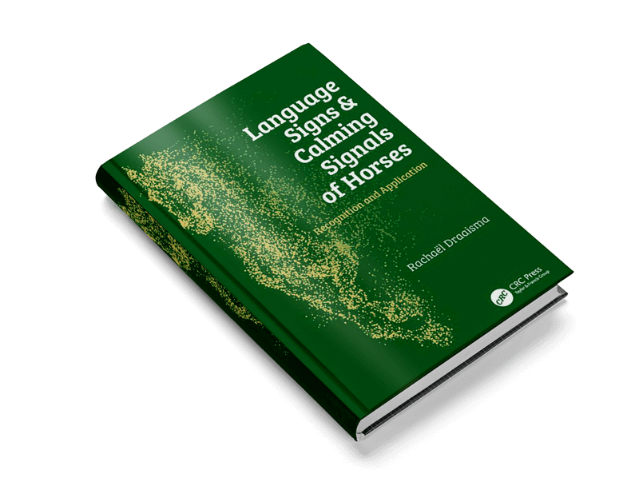

Emocje i sygnały uspokajające u koni
zapisz się już dziś!
2-3 czerwca 2018
Prowadzący: Rachel Bedingfield (Connection Training, Wielka Brytania) i Rachäel Draaisma (Calming Signals of Horses, Holandia)
Miejsce: Warszawa
Rodzaj szkolenia: Seminarium teoretyczne
Niższa cena: 300 zł/jeden dzień, 450 zł/dwa dni – do 30 kwietnia 2018
Wyższa cena: 400 zł/jeden dzień, 600 zł/dwa dni – od 1 maja 2018
Liczba uczestników: 200
Wydarzenie na Facebooku:

- Cena obejmuje poczęstunek – dwie przerwy kawowe i obiad.
- Seminarium będzie tłumaczone z języka angielskiego na polski symultanicznie, jeśli liczba uczestników przekroczy 120 osób. W przypadku niższej liczby uczestników zapewniamy tłumaczenie konsekutywne.
- Uczestnicy otrzymają świadectwa udziału w seminarium.
EMOCJE I SYGNAŁY USPOKAJAJĄCE U KONI
Pierwsze w Polsce seminarium dotyczące systemów emocjonalnych, języka ciała i sygnałów uspokajających u koni. Klucz do zrozumienia konia i budowania więzi ze zwierzęciem. To seminarium, które może w każdym jego uczestniku – jeźdźcu, trenerze, opiekunie konia czy lekarzu weterynarii – zapoczątkować wielką zmianę w podejściu do konia i relacji z nim.
SOBOTA, 2 czerwca 2018 EMOCJE U KONI
prowadząca: Rachel Bedingfield
Wykłady Rachel Bedingfield są wynikiem obserwacji zarówno wolno żyjących koni jak koni domowych, oraz jej studiów nad systemami emocjonalnymi w ujęciu Jaaka Pankseppa. Jako trenerka koni posługująca się w pracy wzmocnieniem pozytywnym, Rachel Bedingfield tłumaczy wpływ stanów emocjonalnych koni na ich zdolności poznawcze, chęć uczenia się i budowania więzi z człowiekiem.
Program-sobota
- Czym są emocje i dlaczego należy je brać pod uwagę.
- Systemy emocjonalne ssaków w ujęciu Jaaka Pankseppa.
- Ekspresja systemów emocjonalnych u koni.
- Emocje a dobrostan koni.
- Rola emocji w szkoleniu koni.
- Porównanie wpływu szkolenia przy użyciu wzmocnienia pozytywnego i negatywnego na emocje i zachowanie koni.
- System POSZUKIWANIA jako kluczowy w procesach uczenia się.
- Sposoby radzenia sobie ze STRACHEM i SMUTKIEM STRATY.
- W jaki sposób aktywizować systemy ZABAWY i OPIEKI.
- Działania wzmacniające więź z koniem.
NIEDZIELA, 3 czerwca 2018 SYGNAŁY USPOKAJAJĄCE U KONI
prowadząca: Rachäel Draaisma
Wykłady Rachael Draaismy stanowią podsumowanie 4 lat badań prowadzonych przez nią pod opieką Turid Rugaas, eksperta w dziedzinie sygnałów uspokajających u psów. Wykłady, bogato ilustrowane materiałem filmowym zebranym do celów badawczych, wprowadzają w świat bogatego lecz często bardzo subtelnego języka koni, którego poznanie umożliwia człowiekowi nawiązanie nowej nici porozumienia ze zwierzęciem.
Program – niedziela
- W jaki sposób powstała książka ‘ Body signs and calming signals in horses’.
- Czym są sygnały uspokajające i jaka jest ich rola.
- Sygnały uspokajające a stopień pobudzenia
- W jaki sposób rozpoznać czy koń chce uspokoić samego siebie czy innego osobnika.
- Wpływ stresu na mózg i ciało konia.
- Naśladowanie sygnałów uspokajających koni.
- Ćwiczenia i zabawy służące budowaniu pewności siebie u konia.
- Nowe bodźce a sygnały uspokajające.
- Samodzielność i wybór w procesie uczenia się konia.
- Praca węchowa z koniem.
Rachaël Draaisma
My name is Rachaël Draaisma. I graduated at the University of Nijmegen, Holland, where I studied the Dutch language. A working career in marketing followed, first as account executive, later as account manager. In 2003 I followed my passion. I obtained several diploma’s and started working as behaviour consultant and dog trainer. I started my own dog school My specialisations are: the resocialisation of severely anxious and aggressive dogs, and dogs with extreme fear for sounds. I visited and still visit lectures around the world. Keeping up to date is a necessity. The calming signals became ore and more important in my work. I wanted to expand my knowledge of the calming signals by the person, who obviously is the expert on calming signals: Turid Rugaas. In 2012/2013 I followed Turid’s International Dog Trainers Education.
This education turned out to be the starting point of another of my passions: working with horses. Being a horse lover as long as I can remember, being a horse owner since the age of 14. Turid’s question to charts the calming signals of horses, under her supervision, was the starting point of a study that started in 2013. I have been analysing film material. Most inspiring work that easily fills up the week and has led to a working shift from dogs to horses.
When working with dogs or horses knowledge of body signals is essential. To see what he is expressing and what he is able to handle in relation to incentives from the environment. Obtaining knowledge on the body and brain is one of my favourite things to do. To know what tension does to the body, to know how brains work. How to make a positive learning climate, how experiences are being remembered. I do not use punishments or any form of force when working. I know that for every problem one can make a plan that will help the horse understand what we mean and will include his involvement. (Of course this is only possible when the wishes of the handler of the horse are realistic). I find it very important that the horse can stand on his own feet and gets the room to express what he feels, chooses and can handle
This study lead to the book “Language signs & calming signals of horses- recognition and application” . This book will be published in October 2017 by CRC Press In England, Australia, the United States, China and India. This book is the result of the last three years of the Study. The study will be ongoing though. I will keep on filming and analysing films. I will also continue to work as behaviour consultant for dogs and horses. I travel to give lecture and workshops in the Netherlands and abroad. You can read more about that topic under the button “Invite Rachaël”
Rachel Bedingfield
Connection Training is all about the art, heart and science of training and Rachel’s role is to bring you the scientific background which supports and explains the success of your training. Students say they love the way she makes science relevant to their daily training and how she expands the way they think about horses and their lives and happiness. She makes the difficult stuff easy and the dry stuff interesting!From her original background in bringing new science, such as organic farming, into the farming world, Rachel became a “born-again” horse-owner in the late 90’s and immediately began to explore better ways of keeping and training horses. After studying the work of Monty Roberts and Pat Parelli, she formed the Natural Horse Group in 2001 with the aim of bringing the world’s best equine practitioners and thinkers to the UK. Rachel hosted courses with such luminaries as Marthe Kiley-Worthington, Lucy Rees, Pete Ramey and Jane van Lennep. Through her learning with all these people, she applied the latest science on equine ethology, nutrition, hoof care and training to her own horses, with excellent results. (Pic of Rachel learning “soft hands” with Mark Rashid)
At this time, she was involved in helping Abigail Hogg research her book “The Horse Behaviour Handbook”. Along with Abi, she started running courses in equine ethology and natural horse-care in their business, Horse-Centred Training.
In 2004 she started the Natural Horse Shop, bringing excellent forage -based feeds and other great new equine products into her area. She studied laminitis and equine metabolic syndrome at Lincoln University, focusing on the management of chronic conditions.
In 2006 she started to develop the UK clinics programme for James Shaw, who’s tai chi for riding is revolutionary. For 5 years, she ran 3 courses/year for him, taking his work all over the UK and developing her own understanding and practise of riding in balance and with breath as the principle aid.
At the same time she started to train more formally in clicker training with Alexandra Kurland, and again worked with her for 5 years, being part of her prominent group of Yorkshire students who were leading the way in developing this approach.
Along with Hannah, she founded the Equine Clicker Conference in 2012, the world’s first gathering of people specializing in marker/reward training for horses. In 2013, they also included a follow-up online conference, so many more practitioners could present and students from all over then world could join in the discussions.
She was also a developer and coach for Hannah’s Clix College, which was the precursor to Connection Training, conducting online seminars, video tutorials and one-to-one internet coaching.
All along, Rachel has studied the scientific background to horse welfare and training, and travelled extensively to gain more education. She has attended many courses and conferences, always questioning the validity of presenters and checking that their approaches were based on good empirical evidence.
This exploration led her to studying the underlying neuroscience of how horses learn, information which challenges much of the accepted dogma, such as the notion of dominance hierarchies in horse herds. She is currently writing the science behind training for the new Connection Training book, due to be published in late 2015.